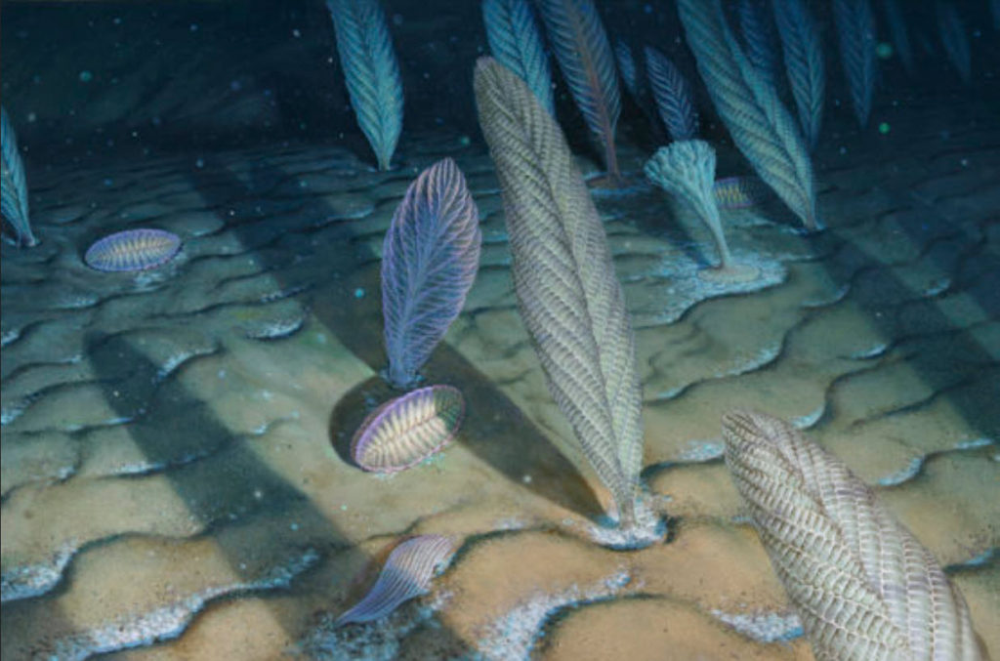
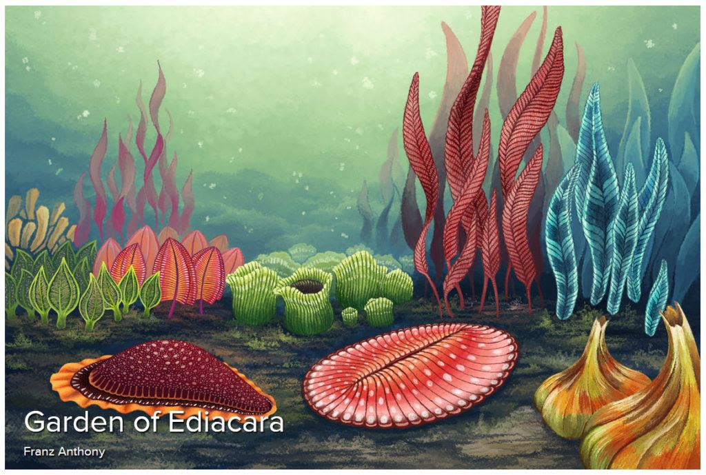
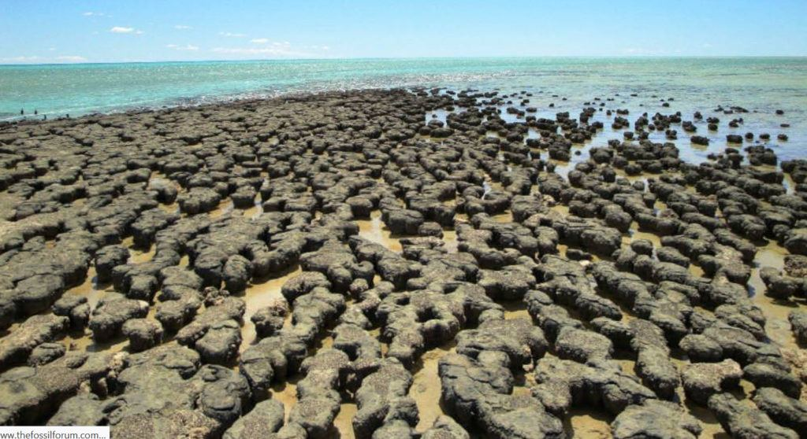
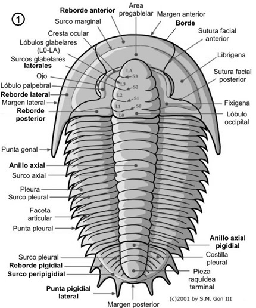
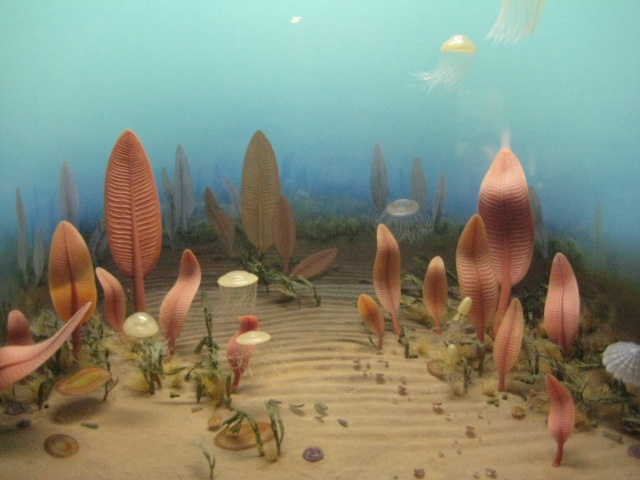
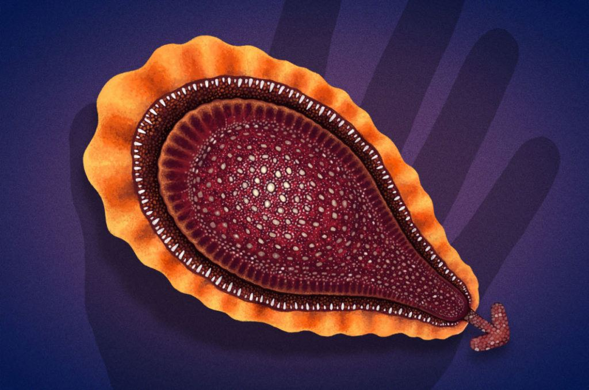
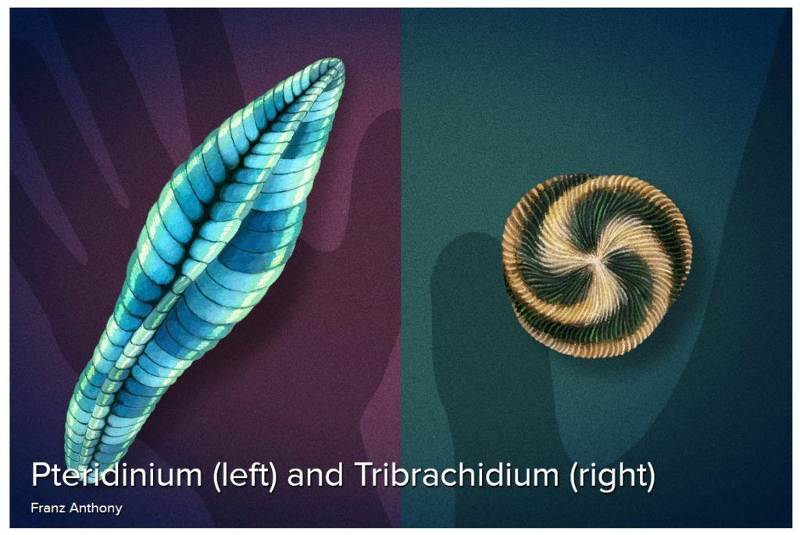
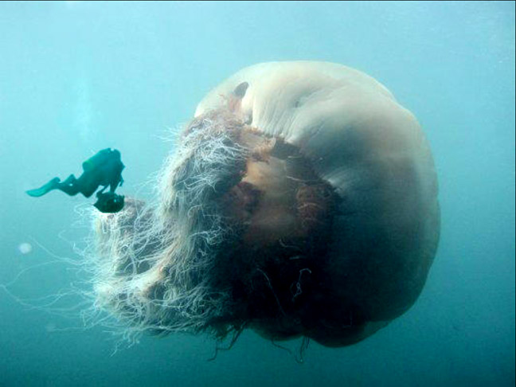
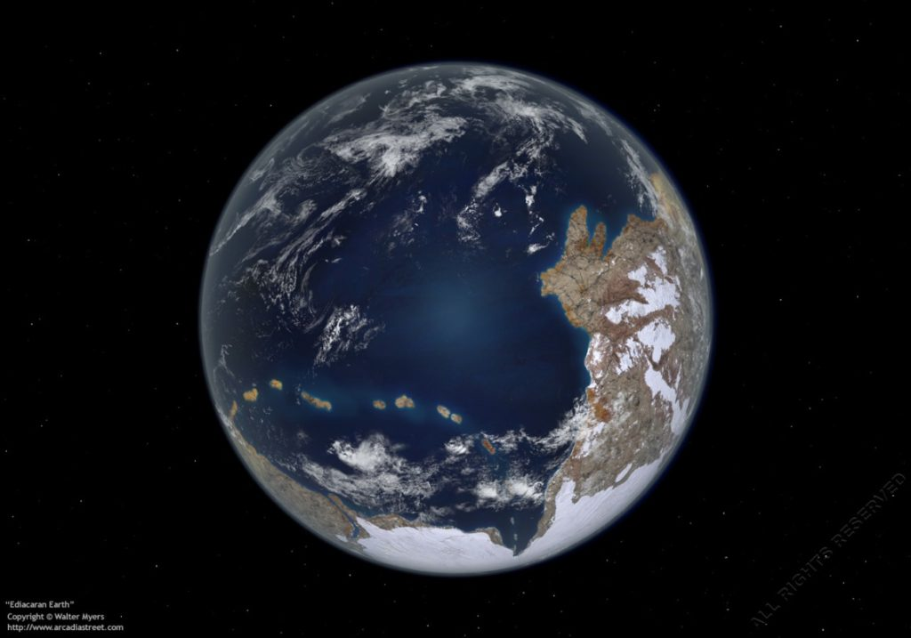
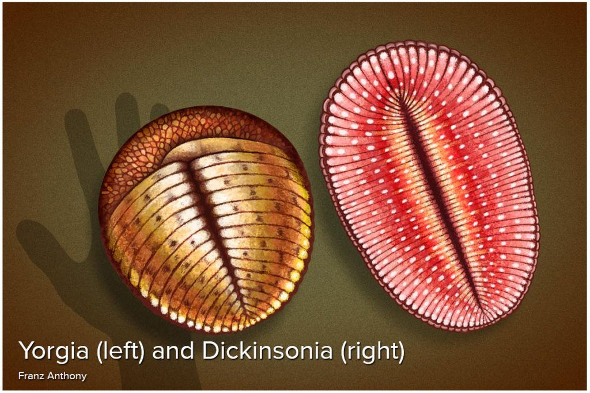

Here is a MAJestic post.
I dredged it up from obscurity, and I think that it would be useful for you all to reread a MM classic for a change. I’ve devoted a few years of “junk and stuff” to help get youse guys mind off the crazy town. So now enjoy this one.
I am sorry that I have been a little slow in releasing these particular kinds of articles, but you know it isn’t everyday where you are located in the middle of ground-zero for World War III. So I’ve been a little side-tracked, don’t you know.
Anyways…
Anyways, as far as this particular MAJestic post is concerned, please keep in mind the limitations that I have regarding the dissemination of information.
While I just cannot divulge any secrets, some of what I CAN discharge has to do with things that are not of a technical interest. Such as history, culture, society, and "the bigger picture". My role (as was Sebastian's) enabled us some very exclusive access to "understandings". Nothing that was really of a functional interest to MAJestic specifically. Just general odds and ends and curiosities. And one of these "tidbits" is how our planet in our solar system became populated with life.
This kind of information is not “secret”, “confidential” or “restricted”. It is considered to be an unimportant curiosity that does not matter in the grand scheme of things.
And this is the subject for today. It is a little history lesson.
We are going to talk about what the earth was like when the first organisms started to grow upon the earth. As well as the kinds of attention that this evolutionary process generated in the civilizations that were present at the time (elsewhere in the galaxy).
Ah. You all know that I have a particular interest in history, don’t you?
What I am going to present here is a mix of [1] what I have been exposed to, and I place it all [2] in context to what our present scientists (“experts”) believe. Combined, the two points of view can give the interested reader some real valuable insight into this rarer bit of obscure knowledge about the earth’s history. I also mention [3] some elements of life within the physical that many humans are unaware of, perhaps being alien to the Newtonian understanding of physics.
We are going to talk about about the Ediacaran Period.
This was a long, long, LONG time ago. Around 630 million years ago. Just about the time when the solar system was starting to become interesting to other species within our galaxy.
In comparison, the human species is only around 400,000 years old, and of that most of the time we were all very primitive. In fact the written history is only around 5,000 years old. We are very youthful. Here we talk about the time long before dinosaurs, flies, insects, fishes and trees. We are talking about the time when there wasn't a moon.
That is correct. 630,000,000 years ago the Earth had no moon.
I cover this subject elsewhere.
The earliest extraterrestrial humanoid (Physically-animated bipedal entities that utilize technology to visit the Earth) visitation known (to me personally) to our solar system occurred during the Ediacaran period (630 million years ago).
FYI: This is not “official” MAJestic knowledge. (This information is tangential to our roles and are personal observations that were debriefed, but not relative to our mission parameters. ) In general it is considered to be extemporaneous, non-mission critical information.
The base age of approximately 635 million years ago is based on the U-Pb (uranium-lead) isochron dating method. Here, strata from Namibia and China was dated using this method. There is a more or less active debate on the dating methodology regarding this time period. In any event it is far above my head and rather esoteric for my tastes. The dating method I place here is approximate and based upon our limited understanding of the Earth at this time.
This was a long, long, very long time ago. The reader must understand that fact. Typically when humans think of the past, we tend to think in terms of thousands of years. Officially, civilization is supposed to be less than 10,000 years old.
Civilization, in this meaning, loosely refers to the creation of stable and moderate sized agrarian communities which may or may not have a written language.
But, this particular period of time is far, far older than that.
In fact, it is not 100x older. It is not 1000x older. It is 63,000 times older than what we consider to be the start of bipedal human civilization. It is so long ago as to be incomprehensible.
Please kindly refer to my notes (within the MAJestic Index) and my thoughts on the human ability to understand large swaths of time.
During this time, there were no evolved humanoids or proto-humans on the planet. The life on the earth was quite primitive.
Therefore, any and all the visitations were made by extraterrestrials. These creatures came and visited the earth and left. No one stayed for long. I would consider these visits and excursions to be survey expeditions made by long-extinct space-faring extraterrestrial species.
They had many forms.
The dominant physical form (by a “long shot”) that we, as humans, would recognize was the early variations of bipedal proto-humanoid extraterrestrials.
During this huge swath of time, the Earth was visited at various times by numerous species.
This period of time lasted for 94 million years, and began in the distant past around 630 million years ago. A lot of things can happen in 94 million years.
Again, the reader is reminded that this particular period of time contains 94 million years. That is an amazingly long expanse of time.
Indeed space-faring species developed, thrived and evolved past their physical forms many times during this period.
Obviously, this implies that there were space-faring, extraterrestrial races at this distant point in time so long ago. (None of which originated on the earth. They only visited it.)
During this period some would visit our solar system for various purposes and they would stay for varying lengths of time. All of these visitation(s) were short lived affairs.
Any settlements were temporary and used for scientific study and other short duration activities.
The visits were, of course, by extraterrestrial species of various points of origin, as there was absolutely just the very beginnings of higher order life on the world at this time.
Our solar system
The reader must understand that at this time the Earth was a bare and desolate place. The land was barren rock, and mountains. Sure there was mater and ice on the land masses, and perhaps microbes. But no significant life on the land surfaces. The only life was in the seas.
Our solar system was mostly free of the huge dust disks and debris field of the earlier 3 billion years.
Our star had matured during that time and became much more stable.
But stability is a relative thing; the earth was no longer entirely molten. Indeed, the surface of the earth was cooling and a thick gaseous envelope of various dusty gasses surrounded it.
Outside the Earth, the other rocky planets were also beginning to cool down and life was just beginning to form in the most unlikely of places. This included the smoggy Mars, and Venus, as well as numerous moons of Jupiter (because Jupiter was much closer to the Sun then as it is today).
At this point in time, the earth was just beginning to stabilize enough to maintain ambulatory life. Previous to this time, it was a hot and desolate place (prior to the Sturtian period around 710 Ma). Then it began to cool down. During the early Neoproterozoic (around 850 Ma to 740 Ma) it cooled down sufficiently for early life in the earliest forms to evolve. There was a pause or “burp” in evolution during the Sturtian glaciation around 710 to 735 Ma, and then a resumed period of growth during the Cryogenian period. This again was put on hold during the Marinoan glaciation that finally ended around 635 Ma. It was the Ediacaran period at around the end of the Marinoan glaciation where things started to evolve into life that we understand it to be; significant. Around the Vendian period (approximately 570 Ma), the first classes and orders of identifiable creatures became recognizable in the fossil records.
Mars, and Venus looked quite different than they do now. The atmospheres were different. The pressures and temperatures were different. Their orbits, and orbital inclination to the ecliptic were different as well.
The earth had no moon, and our orbital inclination was different.
I do not know if there was another planet in orbit around the sun that eventually formed the asteroid belt. My personal belief that there wasn’t a planet, and what we see as asteroids are but the remnants of the solar system “frost zone”. Not of a planet that broke up sometime int he distant past.
Jupiter was larger. It was hotter, and it was closer to the sun than it is now.
A number of it’s moons had atmospheres, and there was actually some (short lived) periods of liquid water on key moons.
All the other gas giants, Jupiter, Neptune and Uranus also migrated outwards, but their physical changes were not as radical as for Jupiter.
Our Planet
Our earth was indeed a desolate place; however it was not without its charms.
It was marginally habitable, but showed great promise to those races with a long term view point.
Our planet consisted of mostly exposed and harsh rocks and water in a harsh nearly lifeless world. It was, of course, shrouded in toxic gasses under high temperature and pressure. But even in this environment, life spawned. During this time on the Earth we saw the continued emergence of simple organisms and simple creatures.
This time is considered the Neo-proterozoic era.
While nothing really existed on land, most life lived in the (emerging) waters of the earth and along the rocky shorelines. Here is where we have found the first good fossils of the first multi-celled animals on the Earth.
These (over the last few hundred years) were discovered and obtained, and that is how we now know that this was a period of the first native biological life on the earth.
Atmosphere
The world (at that time) was not only bare (consisting of broken rocky surfaces and coarse sand and gravels), but the atmosphere was pretty rank.
While there was an oxygen atmosphere, it was then only 40% of what consider normal today.
Instead the climate was dominated by (poisonous to humans) carbon dioxide and at a level fully sixteen times that of today. It was a time of thunderous storms, damp and dank weather and bleak, harsh rocky surroundings.
Yet, with all that being true, the world was still (considered) marginally habitable for bipedal humanoids. Bipedal humanoids would of needed oxygen masks, protective clothing, and solid reliable shoes to walk about on the planet.
Of course there was be dust and dirt, but it tended to have a granular appearance. The air, while rank, was breathable with filters and oxygen supplements.
The atmospheric pressure was tolerable but outside of what was considered normal for conventional humans.
The temperature varied by location, but for the most part was in the range considered to be marginally acceptable.
There was liquid water (over a large section of the globe); stable land forms, and a total lack of competing contentious native life forms. The earth at that time was a potential oasis that would be viewed as having great future promise by any extraterrestrial who would visit it.
Those species who visited it left their marks in various ways. Some of which eventually spawned higher order organisms unintentionally through careless behavior.
Which makes you wonder... "exactly what kinds of careless behaviors were involved?"
Native Life
It was during this time that the (so called) Ediacaran biota flourished.

The Ediacaran biota are the somewhat puzzling fauna of the Ediacaran period. This geological period was from 635–542 million years ago (mya), but the fossil biota was only from 575–542 mya. This was after a series of ice ages and just before the Cambrian period. The biota consists of soft-bodied multicellular organisms, probably animals, which left trace fossils in rocks of Ediacaran age. The biota is quite unusual, and there is no sign of it in the preceding Marinoan glaciation. The biota appears to suffer a fairly severe extinction event at the boundary with the Cambrian. Some of the biota may have survived into the early Cambrian.
Then the world consisted of very large and shallow seas.
These shallow seas permitted the growth of various simple organisms.
Simple trace fossils of possible worm-like creatures; known as the Trichophycus became common, as well as the very first sponges and trilobitomorphs (the early ancestors of trilobites).
The creatures of the earth at this time were simple in design and structure.

They were the earliest naturally evolving creatures of the earth and consisted of very simple proto-fungi and very simple proto-creatures.
At this time there were no insects, birds, or even flowers. The earth was a land of proto-fungi and small simple creatures.
The reader should consider the land at this time to be rather bare and rocky, with the earliest fungi and simple creatures clustering around the shorelines.
The most significant life form; non-ambulatory, was the various Stromatolite colonies that persisted throughout the planet in the shallow seas. These colonies looked like hard rounded sponge rocks and boulders.

These colonies grew close to the land and grew in great numbers due to the favorability of the local climate at that time. Some grew to enormous size. Truly, some were so enormous in size that they resembled low submerged islands.
The reader should consider this time to a period of all sorts of boneless ambulatory aquatic creatures such as jellyfish, and sea slugs.
There is some debate on which kind of life manifested first on the earth. Go here to join the debate; http://www.livescience.com/58622-jellyfish-evolved-before-sponges.html
Indeed, may I indulge in a little creative fantasy and suggest that the sea slugs became quite diverse and colorful. Imagine a world inhabited by such creatures. Creatures such as;
- Hypselodoris kanga
- Acanthodoris pylosa
- Cyerce nigricans
- Elysia crispata(’Lettuce sea slug’)
- Flabellina iodinea
- Costasiella kuroshimae(’Sea sheep’)
- Glaucus atlanticus(’Blue angel’)
- Phyllodesmium poindimiei
- Dirona albolineata
- Hexabranchus sanguineus(’Spanish dancer’)
I suggest the reader to look up these wondrous creatures and watch a video or GIF of their behavior. For indeed creatures similar to the aforementioned dominated the globe at that time.

It was during this period that proto-trilobites came into existence.
We have scant knowledge of these creatures because they were soft shelled, and thus unable to be fossilized.
We can, however, surmise that they appeared similar to that of their later offspring; the trilobites, only with a far simpler biology and soft shell and cellular makeup.
Trilobites were among the early arthropods, a phylum of hard-shelled creatures with multiple body segments and jointed legs (although the legs, antennae and other finer structures of trilobites only rarely are preserved). They constitute an extinct class of arthropods, the Trilobita, made up of ten orders, over 150 families, about 5,000 genera, and over 20,000 described species. New species of trilobites are unearthed and described every year. This makes trilobites the single most diverse class of extinct organisms, and within the generalized body plan of trilobites there was a great deal of diversity of size and form. The smallest known trilobite species is under a millimeter long, while the largest include species from 30 to over 70 cm in length (roughly a foot to over two feet long!). With such a diversity of species and sizes, speculations on the ecology of trilobites includes planktonic, swimming, and crawling forms, and we can presume they filled a varied set of trophic (feeding) niches, although perhaps mostly as detritivores, predators, or scavengers.
Consider where they lived…

The Ediacara (formerly Vendian) biota are ancient life-forms of the Ediacaran Period, which represent the earliest known complex multicellular organisms.
They appeared soon after the Earth thawed from the Cryogenian period’s extensive glaciers, and largely disappeared soon before the rapid appearance of biodiversity known as the Cambrian explosion.
This period saw the first appearance in the fossil record of the basic patterns and body-plans that would go on to form the basis of modern animals.
Little of the diversity of the Ediacara biota would be incorporated in this new scheme, with a distinct Cambrian biota arising and usurping the organisms that dominated the Ediacaran fossil record.
What was life like 560 million years ago? Bacteria and green algae were common in the seas, as were the enigmatic acritarchs, planktonic single-celled algae of uncertain affinity. But the Ediacaran also marks the first appearance of a group of large fossils collectively known as the "Ediacara biota." The question of what these fossils are is still not settled to everyone's satisfaction; at various times they have been considered algae, lichens, giant protozoans, or even a separate kingdom of life unrelated to anything living today. Some of these fossils are simple blobs that are hard to interpret and could represent almost anything. Some are most like cnidarians, worms, or soft-bodied relatives of the arthropods. Others are less easy to interpret and may belong to extinct phyla. But besides the fossils of soft bodies, Ediacaran rocks contain trace fossils, probably made by wormlike animals slithering over mud. The Ediacaran rocks thus give us a good look at the first animals to live on Earth.
Of course, there weren’t any naturally evolved humanoids at this time. Nor were there any animals, rodents, flies or insects.
For the most part, any life that was on the earth existed solely within (or near) the water.
It was an aquatic world.
For all practical purposes, the Earth consisted of land masses consisting of bare rocks, sand, dank clouds and waters of various salinity (some areas were alkaline, while others were rich in various salts).

Yet, even though there weren’t any significant large mammals around, we did see other kinds of life. Here we saw an emergence of the first native life forms.
Jellyfish World
This period is marked, or the ultimate creation of, a sudden climatic change at the end of the Marinoan ice age.
Here, the temperature started to warm up and huge swaths of glaciers and frozen areas disappeared, and large pools of warm water and regions of comparative stability appeared.
While we have the earliest fossils on record from this geological time period, it is believed that many soft skinned creatures roamed the seas. I like to think of this time period as the age of the jellyfish.
Given the environment and the nature of life, it seems probably that huge groups of various types of jellyfish evolved and swam in the seas of this early earth. And possibly, quite possibly, some of those soft bodied creatures grew to enormous size.
For after all, they were the dominant life forms at that time.

The reader should think of images of jellyfish, piles, globs and puddles of organic mobile goo. They should envision that these globs formed families or colonies of creatures and often conjugated together in the warm shallow seas.
Over time, the size and diversity of these groups changed.
However, any visitor to the planet would have been astounded by the great numbers of living organic masses that apparently thrived in the seas at that time.
The Ediacaran period was a time of flourishing soft skin and soft shelled life. The seas were alive with lichen and other forms of simple marine life.
Jellyfish are more or less common today.
They have evolved to fulfill their proper environmental niche in the world and have honed their survival instincts into great diversity of forms and creatures.
At this time, however, the jellyfish were of a simpler design.
They were more benign and less adaptable to change.
Many life forms, and species developed, found a particular environmental niche and then died off.
We do not know what any of them looked like, but we can certainly make our own summations.

There is no doubt in my mind that soft-skinned marine life grew to enormous sizes during this time.
I further believe that there were many such variations of these creatures, which should be considered to be the precursors of jellyfishes and other evolutionary “dead ends”.
This is a picture of a huge jellyfish with a diver next to it for comparative purposes. Obviously there were no humans on the planet at this time. I place it here for a comparative aspect in that native life, especially the dominant native life at that time, can and did grow to enormous size.
Perhaps even the size of a whale or larger!
I am confident that these first jellyfishes or similar soft-shelled creatures were genetically primitive, but I am also confident that they were able to specialize and fill various niches in the ecosystem naturally.
In fact, it is highly possible that these creatures could grow to amazing sizes. Though we do not really know for sure.
In any event, the Ediacara biota bear little resemblance to modern life forms. Any soft skinned creatures would be unrecognizable to most humans today.

The Earth 630,000,000 years ago was a very different place. Not only were the contents of different shapes than what we see today, but the weather and climate were also completely different as well.
The earth had poles at a different location and the axis of rotation relative to the obliquity of the ecliptic was completely different to what we know it to be today.
It was an ocean world populated with soft-skinned native life, and very few land based forms.
Yet this world held promise.
Visitors to our solar system would find that the earth not only held a moderately acceptable environment, but also the planet Mars would appear marginally interesting as well. Mars had a thicker atmosphere, and while the once present oceans were long; long gone there would of still been slight evidence of glaciers and other frozen remnants that would of made visiting this solar system of great interest to extraterrestrial explorers.
Rheotaxis in the Garden of the Ediacaran
The “Garden of the Ediacaran” was a period in the ancient past when Earth’s shallow seas were populated with a bewildering variety of enigmatic, soft-bodied creatures.
Scientists traditionally have pictured it as a tranquil, almost idyllic interlude that lasted from 635 to 540 million years ago. But new interdisciplinary studies suggests that the organisms living at the time may have been much more dynamic than experts have thought.
An international team of researchers from Canada, the UK and the USA, including Dr Imran Rahman from the University of Bristol, UK studied fossils of an extinct organism called Tribrachidium, which lived in the oceans some 555 million years ago. Using a computer modelling approach called computational fluid dynamics, they were able to show that Tribrachidium fed by collecting particles suspended in water. This is called suspension feeding and it had not previously been documented in organisms from this period of time. Tribrachidium lived during a period of time called the Ediacaran, which ranged from 635 million to 541 million years ago. This period was characterised by a variety of large, complex organisms, most of which are difficult to link to any modern species. It was previously thought that these organisms formed simple ecosystems characterised by only a few feeding modes, but the new study suggests they were capable of more types of feeding than previously appreciated. Dr Simon Darroch, an Assistant Professor at Vanderbilt University, said: "For many years, scientists have assumed that Earth's oldest complex organisms, which lived over half a billion years ago, fed in only one or two different ways. Our study has shown this to be untrue, Tribrachidium and perhaps other species were capable of suspension feeding. This demonstrates that, contrary to our expectations, some of the first ecosystems were actually quite complex." Read more at; https://phys.org/news/2015-11-earth-ecosystems-complex-previously-thought.html More information: 'Suspension feeding in the enigmatic Ediacaran organism Tribrachidium demonstrates complexity of Neoproterozoic ecosystems' by Imran A. Rahman, Simon A. F. Darroch, Rachel A. Racicot and Marc Laflamme in Science Advances, DOI: 10.1126/sciadv.1500800
Scientists have found It extremely difficult to fit these Precambrian species into the tree of life. That is because they lived in a time before organisms developed the ability to make shells or bones. As a result, they didn’t leave much fossil evidence of their existence behind, and even less evidence that they moved around.
So, experts have generally concluded that virtually all of the Ediacarans—with the possible exception of a few organisms similar to jellyfish that floated about—were stationary and lived out their adult lives fixed in one place on the sea floor.
The new findings concern one of the most enigmatic of the Ediacaran genera, a penny-sized organism called Parvancorina, which ischaracterized by a series of ridges on its back that form the shape of a tiny anchor.
By analyzing the way in which water flows around Parvancorina’s body, an international team of researchers has concluded that these ancient creatures must have been mobile: specifically, they must have had the ability to orient themselves to face into the current flowing around them.
That would make them the oldest species known to possess this capability, which scientists call rheotaxis.
"Our analysis shows that the amount of drag produced with the current flowing from front to back is substantially less than that flowing from side to side," said Simon Darroch, assistant professor of earth and environmental sciences at Vanderbilt University, who headed the study. "In the strong currents characteristic of shallow ocean environments, that means Parvancorina would have benefited greatly from adjusting its position to face the direction of the flow."
The analysis, which used a technique borrowed from engineering called computational fluid dynamics (CFD), also showed that when Parvancorina faced into the current, its shape created eddy currents that were directed to several specific locations on its body.
Details of the analysis are described in a paper titled "Inference of facultative mobility in the enigmatic Ediacaran organism Parvancorina" published online May 17 by the Royal Society journal Biology Letters. Read more at: https://phys.org/news/2017-05-life-precambrian-livelier-previously-thought.html#jCp
and…
"This would be very beneficial to Parvancorina if it was a suspension feeder as we suspect because it would have concentrated the suspended organic material making it easier to consume," -Darroch More information: Simon A. F. Darroch et al, Inference of facultative mobility in the enigmatic Ediacaran organism, Biology Letters (2017). DOI: 10.1098/rsbl.2017.0033 Read more at: https://phys.org/news/2017-05-life-precambrian-livelier-previously-thought.html#jCp

Extraterrestrial Occupation
Now I am going to discuss extraterrestrial species and how they interacted with the earth at this time. Let it be known that the present species that MAJestic interacts with did not exist at that time. Here we are discussing (mostly) long extinct species that are known to the extraterrestrial species that we interact with today. But of which they are themselves unfamiliar with them in any degree of detail that they specifically and selectively choose not to communicate with me about. I cannot say much more than that. Cannot.
At this time, the universe was already mature.
So even though our solar system was still rather youthful, the rest of the universe was quite old.
In fact, the universe was already 11 billion years old when the Ediacaran period began.
What this means is that there were entire life cycles of stars that were born, grew into maturity, and died well before our solar system was even formed.
In fact, there is evidence, from the spectral composition of our sun, that at least four generations of previous stars came before our solar system was berthed. This means that it completely realistic to expect the presence of extremely advanced galactic-wide extraterrestrial civilizations with interstellar transport technology in our region of space.
At this time, there was still consternation regarding specific pockets of unorganized quanta that had naturally formed into non-approved quantum soul archetypes. But none of that really was a concern to our physical world at that time. The quanta that surrounding the planet was just beginning to formulate into discrete packets; while some might argue otherwise, and the entire region was open for physical extraterrestrial exploration. (It had been explored much earlier by discarnate soul orders, but that is not our concern at this time.)
+ + +
The Ediacaran period saw the presence of the very first humanoid extraterrestrial bases on the earth.
These facilities were short duration affairs. Mostly used for scientific inquiry. To imagine what these facilities were like, one should consider what the current human research stations look like in Antarctica.
Scout. Scan. Visit. Sample. Leave.
I am quite confident that the extraterrestrial bases were very similar to those facilities in both form and function.
Essentially,we should realistically consider the base facilities at this time and place to be similar to that consisting of a small cluster of habitats around a secured landing area for the associative vehicles.
None of the bases or communities during this entire huge swath of time (during the Ediacaran period) were ever very large.
Typically, the species operated out of their spacecraft, which at that time, tended to be (comparatively) huge. (Not all, and not the “critical” visits. Just the ones that made the greatest disruption in the quantum envelope that is recorded.) They would then send excursions to the surface and form “base camps” which typically tended to consist of rudimentary structures and facilities.
Typically planetary excursions were very; very short lived affairs. Often lasting less than one month in duration.
Although there were a number which lasted for much longer; perhaps as long as two years in duration. However, in all cases, they could just be considered to be scientific excursions, which were there for the purposes of scientific investigation and inquiry.
For some reason, I have always assumed that these visits required large spacecraft with interstellar propulsive capability. However, I do not know if this was the case for every species. Indeed, for the multi-dimensional and higher order species, they might have utilized other methods that are far beyond our level of understanding at this time.
Typically, one might expect (or more accurately, assume) the base facilities to lie close to the equator for reasons of avoiding the gravity sink of the earth. Nevertheless, when one studies the map of the Earth at that time, one can clearly see a problem with the base placement.
It is my arrogant assumption that the extraterrestrial entities needed to land or walk on dry land, and that they would see ocean landings a barrier. All of this is assumptive on my part. The reader should be made aware that the poles (North and South) as well as the equator as determined by conventional historical cartographers are typically incorrectly placed. The axis of rotation and the tilt of the earth at this time was wholly different than what it is today. The current maps relative to this time has to be adjusted to take this into account. I hope that I was able to rectify this discrepancy in the maps that I presented here.
There weren’t too many dry land locations near the equator at this time.
That severely limited the location of the bases of operation around a water world swimming full of proto-jellyfish like creatures. In any event, none were involved in any type of colonization or industrial facilities.
That I am aware of.
It is entirely possible that contamination of the native ecosystem by extraterrestrial races contributed to the emergence of life on the Earth at this time.
Contamination refers to any extraterrestrial influence on the biology of the earth ecosystem at that time.
We can be assured that there was some degree of contamination.
There always is.
This is both physical, spiritual and in all ways quantum. But, no one knows for sure the impact it had, if any.
Nothing (physical) remains of whatever visitors occupied the earth at this time.
However, there is the remote possibility that the Baigong pipes in China might be the remains of what once was some kind of industrial facility of some type. The Baigong Pipes are a series of pipe-like features found on and near Mount Baigong, about 40 km southwest of the city of Delingha, in the Haixi Mongol and Tibetan Autonomous Prefecture, Qinghai Province, China. Associated with these pipe-like features are "rusty scraps" and "strangely shaped stones". Analysis of the "rusty scraps" by Liu Shaolin at a "local smeltery" reportedly found that they consist of 30 percent ferric oxide and large amounts of silicon dioxide and calcium oxide. This is what one would expect of fossilized rust buried in sandy soil. The state run newspaper People's Daily reported on a 2007 investigation where a research fellow from the Chinese Earthquake Administration reported they had found some of the pipes to be highly radioactive.
Skeptics claim that this is a natural formation (of course they would). According to any measure of anthropological science, there was no way that naturally evolved tool-making bipedal humanoids could of evolved at this time. In any event, any remains of artificial constructions from this distant past would be altered beyond appearance and would have alternative material constructions. For a conventional explanation of what this site is please visit; http://skeptoid.com/episodes/4181. It has a moderately reasonable conventional explanation for the observed formations. Yet, I must specifically stress to the reader that time and geologic pressures alter the appearance and shape of things.. This site could just as well be a natural site as it could be the remains of a very ancient construction. The reader needs to pursue life with an open mind and consider both possibilities.
The only evidence remaining for (supplemented) human observation are the tell-tale quantum level signatures of early visitations in the (local regional) quantum cloud.
In our universe, every time one quantum particle interacts with another one, even if it is just a thought, it leaves a “mark” for all eternity. Those with the proper tools can read and understand these marks. And thus have the ability to observe the past as it transpired, in real time. We know of a number of extremely advanced races that can do this. But as far as humans are concerned, only our quantum soul bodies have this ability. (Even at that, it is rudimentary.) Our physical bodies are wholly unable to access these records. Instead, we must utilize the assistance of other, more advanced physical races.
Unfortunately, we as humans, do not possess the ability to read and interpret these signatures.
We only know what is told to us by those whom have this ability.
What they tell us is quite simplistic.
They tell us that the planet was visited and explored by humanoid bipedal entities at this time. We also know that they traveled through various methods, not limited to physical transport. Indeed dimensional transport seemed to be the most common method.
Their past, history, appearance, and other traits that we might find interesting are shrouded in the mists of time.
That includes what happened to the various species whom visited this planet and where they are today.
This is the full extent of what I know about this time.
Summary
Around 650 million years ago, the first extraterrestrial life set foot on the earth and investigated it. Over time there were numerous subsequent visits. During some of these visits a small number of bases or facilities were constructed for various scientific and investigative purposes.
The solar system at that time was still very young, being only three billion years old. There were many comets and orbiting rocky bodies that yet had to be absorbed or collided with the larger planetary bodies.
Mars was not habitable, but both Mars and Venus were more habitable to ambulatory humanoids than they are today.
To this end, this solar system was of interest because of the three possible marginally desirable planets in the system. The Earth, Venus and Mars. Additionally, since the gas giants were closer to the sun than they are now, and hotter, a number of Jupiter moons possessed atmosphere in a gaseous state, and some even had oceans that held water in a liquid state.
This entire solar system held promise.
The earth at that time was mostly bare rock with oceans teeming with soft-shell creatures.
At that time there was no galactic federation that would claim administration for our solar system.
For the Ediacaran Period of nearly 89 million years, the situation was pretty much a stable one. Our solar system was mapped, explored, and systematically ignored by other species.
The vast bulk of time where this occurred was from 600 Ma to around 560 Ma.
They actually found our solar neighbors far more interesting for a host of reasons, and thus at this time just mostly ignored our solar system.
The solar system was still evolving and there were various comets and rogue asteroids that would and did present a threat to any native life in the solar system. This system was considered to be moderately interesting but not worthy of colonization by any of the species who visited it.
It was noted; explored in a more or less cursory manner, and archived.
Very little happened on the earth in the regard to extraterrestrial involvement of a substantive nature during this time period.
Those MM readers who might wonder what life might resemble around planets in the habitual zone of stars around three billion years old, might well learn from this narrative and explanation here.